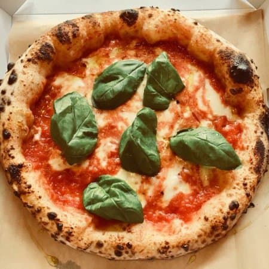

Pizza Napoletana

Description
Neapolitan pizza is one of the most famous and beloved styles of pizza in the world. Originating from Naples, Italy, this pizza is known for its thin, chewy crust with a slightly crispy edge, simple yet high-quality toppings, and a quick baking time in a high-temperature oven. Made with just a few ingredients, the key to an authentic Neapolitan pizza is using the right type of flour, fresh tomatoes, mozzarella, and extra virgin olive oil.
Traditional Neapolitan pizza follows strict guidelines, including a long fermentation process for the dough and a baking temperature of at least 800°F (430°C) in a wood-fired oven. While a home oven may not reach these temperatures, this recipe will show you how to make an amazing Neapolitan-style pizza using a pizza stone or steel. Let’s get started!
Ingredients
- 500g (4 cups) 00 flour (or all-purpose flour if unavailable)
- 325ml (1⅓ cups) water
- 10g (2 tsp) sea salt
- 3g (1 tsp) dry yeast (or 1g fresh yeast)
- 1 tbsp extra virgin olive oil
- 300g (1⅓ cups) canned San Marzano tomatoes
- 200g (7 oz) fresh mozzarella (preferably mozzarella di bufala or fior di latte)
- Fresh basil leaves
- Extra virgin olive oil for drizzling
- A pinch of salt for the sauce
Steps
- Prepare the dough: In a large bowl, dissolve the yeast in the water. Add the flour and mix with your hands or a wooden spoon. After a minute, add the salt and continue mixing until a shaggy dough forms.
- Knead the dough: Transfer the dough to a lightly floured surface and knead for about 10 minutes until smooth and elastic. If the dough is too sticky, add a little flour, but avoid overdoing it.
- First rise: Place the dough in a lightly oiled bowl, cover it with a damp cloth or plastic wrap, and let it rise at room temperature for 8–12 hours. If you have time, refrigerate the dough for 24 hours for better flavor and texture.
- Divide and shape: After the first rise, divide the dough into 2–4 equal portions, depending on the size of your pizzas. Shape each portion into a smooth ball, cover, and let them rest for another 2 hours.
- Prepare the sauce: Crush the canned San Marzano tomatoes with your hands or a blender until smooth. Add a pinch of salt and a drizzle of olive oil. Set aside.
- Preheat the oven: Place a pizza stone or steel in the oven and preheat it to the highest possible temperature (usually 500°F or 260°C). Let it heat for at least 45 minutes.
- Shape the pizza: On a lightly floured surface, stretch one dough ball into a thin round, about 10–12 inches in diameter. Avoid using a rolling pin to keep the dough airy.
- Add toppings: Spread a thin layer of tomato sauce on the dough, leaving about an inch of crust uncovered. Tear the mozzarella into small pieces and distribute them evenly. Add fresh basil leaves and a drizzle of olive oil.
- Bake the pizza: Transfer the pizza onto the hot pizza stone using a pizza peel. Bake for 6–8 minutes, or until the crust is puffed and slightly charred, and the cheese is bubbly. If using a broiler, turn it on for the last 2 minutes for extra charring.
- Serve: Remove the pizza from the oven, let it cool for a minute, drizzle with more olive oil if desired, and enjoy immediately!